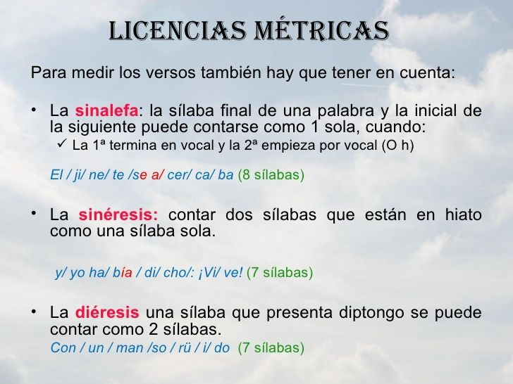
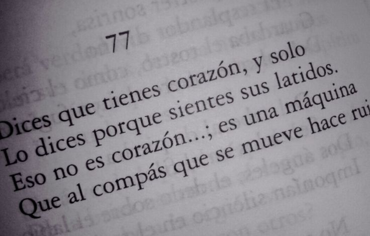

 |
¿Qué es métrica?La métrica es el conjunto de reglas que determinan la medida de los versos en un poema. Se refiere al número de sílabas que tiene cada verso y a la manera en que esas sílabas se organizan en patrones rítmicos. En la tradición poética, existen diferentes tipos de versos según su extensión: por ejemplo, el octosílabo (8 sílabas), el endecasílabo (11 sílabas) o el alejandrino (14 sílabas). La métrica ayuda a dar musicalidad y estructura al poema, y muchas veces se combina con formas fijas como el soneto, la redondilla o el romance. Aunque algunos poetas modernos han roto con estas reglas usando verso libre, la métrica sigue siendo una herramienta fundamental para entender la arquitectura de la poesía. |
¿Qué es rima?La rima es la repetición de sonidos al final de los versos, lo que genera armonía y cohesión dentro del poema. Puede ser consonante, cuando coinciden todos los sonidos a partir de la última vocal acentuada (por ejemplo: canto / manto), o asonante, cuando solo coinciden las vocales (por ejemplo: casa / rama). La rima puede seguir esquemas regulares, como en los sonetos (ABBA ABBA CDC DCD), o más libres, como en los romances, donde se repite la rima asonante en los versos pares. Además de su función estética, la rima facilita la memorización y la recitación, lo que fue clave en épocas en que la poesía se transmitía oralmente. |
 |